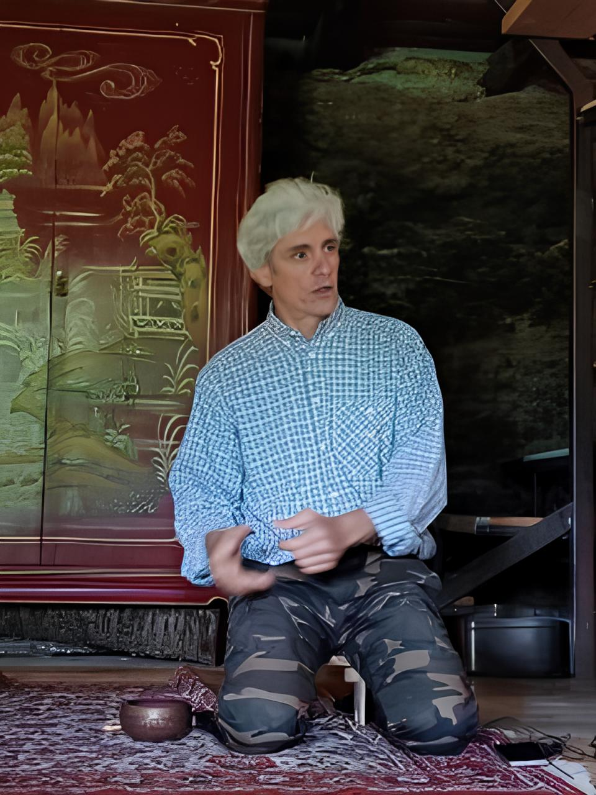

Mi chiamo Antonio Lengua.
Nel 2000 ho scelto di lasciare il posto in sala operativa per lavorare in proprio. Ho affiancato al trading quotidiano un’intensa attività di studio, alla ricerca di indicatori capaci di sostituire il feeling di mercato tipico delle sale operative. Ho scoperto che molte informazioni si possono ottenere analizzando i volumi, poiché tutti i flussi importanti finiscono sui mercati ufficiali.
Col tempo ho sviluppato un sistema di analisi tecnica basato sui volumi, spiegato in questo sito. Negli anni ’90, i volumi in tempo reale erano rari; per elaborare i miei indicatori ho imparato a programmare e costruito in autonomia gli strumenti che oggi utilizzo.

Ai ritiri e allo sviluppo di Mente Cielo collabora anche mia figlia Chantal.
Dopo una laurea Magistrale internazionale in Digital Humanities and Digital Knowledge presso l'Università di Bologna, va a vivere e lavorare a Milano come EMEA Specialist Software Architect presso una multinazionale americana del settore software.
Dopo alcuni anni di attività professionale, sceglie di abbandonare il mondo corporate per dedicarsi integralmente a uno studio della mente più profondo, orientandosi verso la meditazione e la pratica contemplativa, partecipando a ritiri intensivi di durata fino a 30 giorni, secondo la tradizione della vipassana e del Buddhismo Chan (Zen cinese), e praticando modalità quali lo zuòchán (consapevolezza del respiro) e l’huàtóu (investigazione affine ai kōan della tradizione giapponese).
Tra i suoi insegnanti figurano Letizia Baglioni, la Ven. Guo Xing, il Chan Master Žarko Andričević, il Ven. Da Xing e la Chan Master Hildi Thalmann.
Attualmente gestisce una Newsletter di Mindfulness settimanale gratuita, La Tazza Vuota, le cui edizioni sono via via caricate sul suo sito personale. La Newsletter riassume ore di studio di testi che spaziano dalla psicologia moderna al Buddhismo antico, dalle neuroscienze alle pratiche contemplative: clicca qui per iscriverti!.